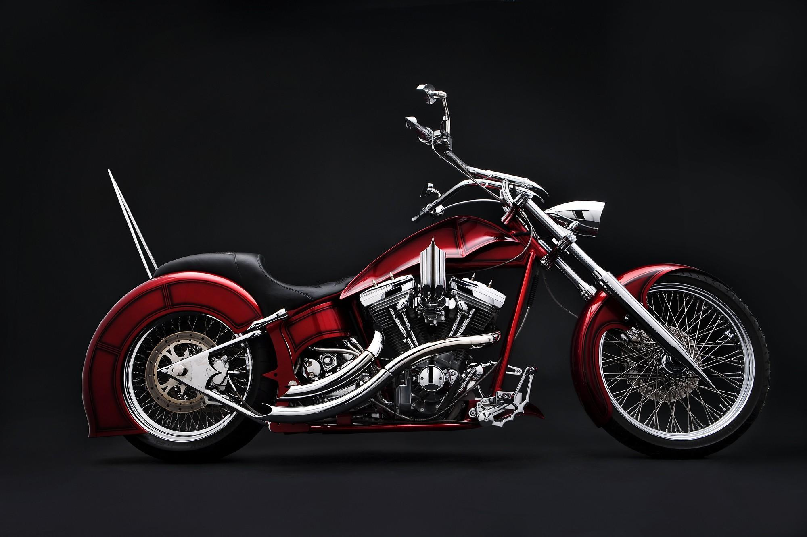
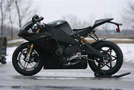
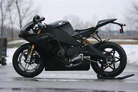

Commonly referred to as “naked motorcycles,” these bikes are known for their upright riding position. Both handlebars and foot pegs are situated so that riders can maintain a comfortable position without having to reach too far forward. Their moderate-size engines and functional, user-friendly design make them a good option for new riders.
Cruisers are modeled after large American machines from the 1930s to 1960s – the most popular being Harley-Davidsons. These bikes have a V-twin engine designed for low-end torque and offer a low riding position, high handlebars and forward foot pegs – causing riders to lean back slightly. This seating may not be ideal for beginners who are anticipating riding at higher speeds for long periods of time, since pulling back on the handlebars to battle wind can be tiring.
Optimized for high speeds and acceleration, sport bikes have high-performance engines on a lightweight frame. They feature higher foot pegs and a longer reach to the handlebars, which is beneficial when riding into the wind at higher speeds. At lower speeds, sport bikes can be tiring because they put more weight on a rider’s hands and wrists
 


Designed for long-distance riding, touring motorcycles have large engines and bigger fuel tanks. They give riders a comfortable, upright seating position and more storage, but their size and higher cost may make them more suited for experienced riders.

Engines are measured in cubic centimeters or CCs, which refers to the volume inside the engine where air and fuel is combined to power the bike. Typically, a motorcycle with a higher number of CCs means a bigger engine, more power and faster speeds.
The kind of riding you're interested in fairly well dictates the type of bike you should shop for. Conversely, the kind of bike you ride largely defines your motorcycling world and lifestyle. So, besides selecting the motorcycle based on its mechanical and performance attributes, consider what circles you'll likely be riding in—so to speak.
Is This Bike appropriate for Rider?
If you see yourself using the bike primarily as daily transportation, consider a standard, or traditional, bike. If you used to ride years ago, these will look familiar, but feel better thanks to electric starters, fuel injection and disc brakes. If your commute is a long one, you typically do it with a passenger and you want a bit more style, the next logical choice is a cruiser. If you intend to spend many hours and miles in the saddle with a passenger sitting behind you, you need a touring bike.
Weight of BikeThe heavier the bike, the harder it is to operate. You need to be able to upright your bike if it gets knocked over.
Height of BikeWhile straddling the bike, make sure your feet can touch the ground when you stop. Also measure the length of your leg from the bottom of your foot to your groin. If the seat is higher than the measurement, the bike is most likely too tall for you.
Whether you buy a used motorcycle from a dealer or an individual, compare the odometer reading with the condition of the bike. Does it look right? Ask to see the maintenance and service records and receipts.
• Look for rust and scratches on the bodywork, tank and fenders. Inspect the footpegs for wear: Worn on top means lots of miles. Worn on the bottom means a rider leaning over too far in corners.
• A cracked or weather-beaten seat and faded, oxidized paint means the bike has seen a hard life.
• Check for new or aftermarket parts that have obviously replaced broken ones. Specifically, check the footpegs, mirrors, handlebar grips, and brake and clutch levers.
• Inspect the engine and transmission cases for oil seepage, weeping and leaks.
• The chain should be clean and tight, with about an inch of slack measured halfway between the sprockets on the bottom run. A rusty or grime-caked chain indicates lack of maintenance.
• Brake discs should be smooth, clean and not blue—a sign of dragging/overheating brakes. Examine the tires for signs of abuse.
• The bike should start easily and may initially emit a little smoke on a cold startup. If it's hard to start or billows clouds of smoke—especially blue smoke—beware.
For further queries,You can contact our experts:
Mobile No:8156939162
Gmail: motodel@gmail.com